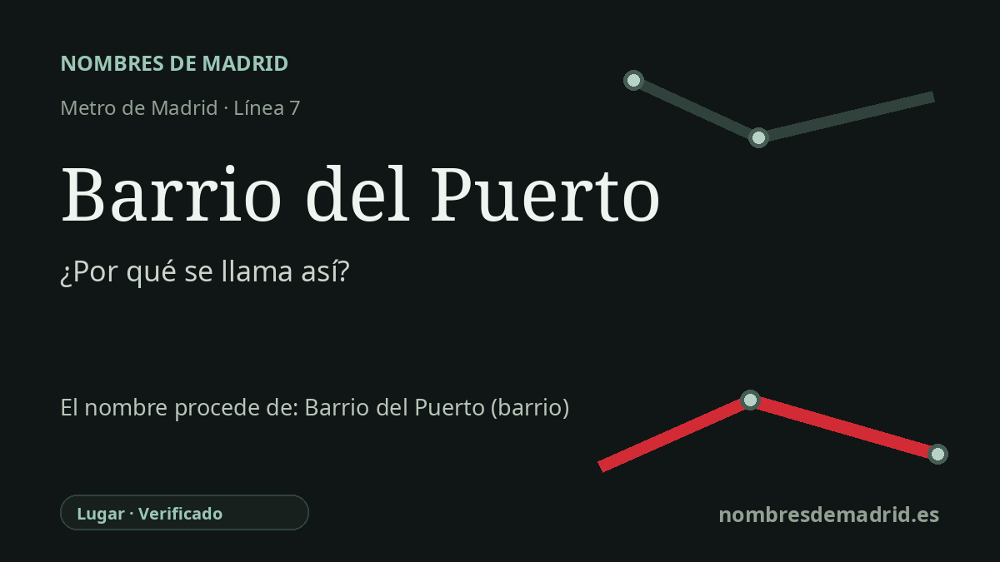

Publicado el · Investigación de Nombres de Madrid · Cómo verificamos cada origen · 7 fuentes consultadas
Respuesta rápida
La estación Barrio del Puerto toma el nombre del barrio de Coslada donde se sitúa. El topónimo alude al Puerto Seco de Madrid-Coslada, una terminal ferroviaria interior conectada con grandes puertos marítimos españoles.
La historia del nombre
El nombre de la estación es local y directo: Barrio del Puerto es el barrio de Coslada al que da servicio esta parada de la línea 7. El Consorcio Regional de Transportes sitúa la estación en la avenida de España, 8, y denomina también Barrio del Puerto a su vestíbulo, lo que confirma que el nombre del metro sigue el del entorno urbano inmediato.
La parte más interesante está en la palabra Puerto. Coslada no tiene costa, pero el nombre del barrio remite al Puerto Seco de Madrid-Coslada, una terminal logística interior conectada por ferrocarril donde se transfieren, tramitan y distribuyen mercancías marítimas sin estar físicamente junto al mar. En 1998, al informar sobre planes urbanísticos y de realojo en Coslada, El País señaló que el destino sería el nuevo Barrio del Puerto y que este debía su nombre al Puerto Seco previsto en el municipio.
El Puerto Seco forma parte de la transformación logística de Coslada a finales del siglo XX y comienzos del XXI. Una información de 2002 remontaba el proyecto a 1995 y explicaba que empezó a funcionar en marzo de 2001, cuando la terminal de Coslada pudo conectarse con los puertos de Valencia, Bilbao, Algeciras y Barcelona. La información actual del Port de Barcelona sigue describiendo el Puerto Seco de Madrid-Coslada como un centro enlazado con Algeciras, Barcelona, Bilbao y Valencia para mover mercancías entre Madrid y los mercados marítimos internacionales.
El barrio refuerza esa identidad marítima en su lenguaje urbano. La asociación vecinal describe un barrio joven con un 'Paseo de los descubridores', esculturas de exploradores, referencias a océanos y la cercanía del espacio verde de El Humedal. El resultado es una identidad deliberadamente náutica en un municipio sin litoral cuyo verdadero 'puerto' es logístico, no costero.
Para la estación, la fecha de denominación más segura es la apertura de MetroEste el 5 de mayo de 2007, cuando la prolongación de la línea 7 empezó a transportar viajeros entre Madrid, Coslada y San Fernando de Henares. El origen está bien respaldado, pero la formulación más prudente es que el barrio tomó su nombre del Puerto Seco y que la estación tomó después el nombre del barrio.